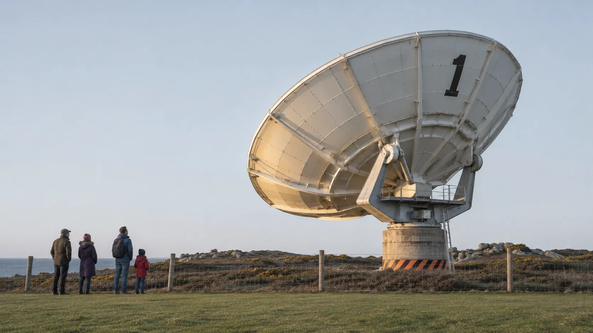
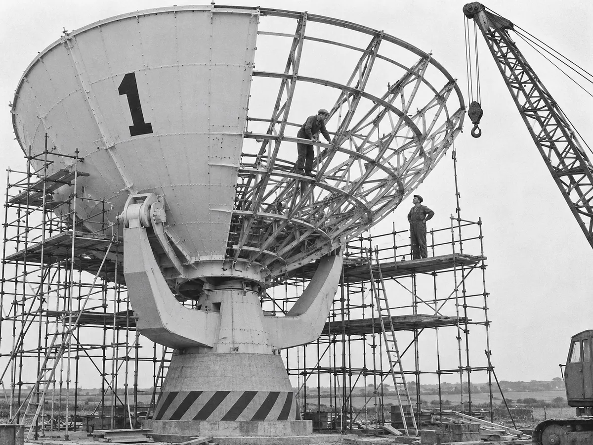
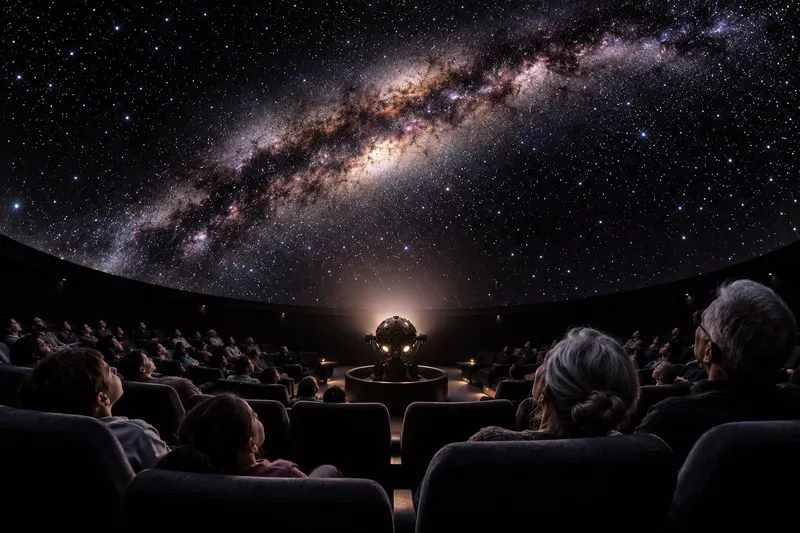

Carrick Head Tracking Station: planetarium, radio dish and observing nights

Twenty-five minutes from Helston on the B3293, or a mile along the coast path from Coverack.
Instruments A dish you can steerBuilt in 1964 to follow satellites, rebuilt by volunteers to listen for hydrogen in the Milky Way.
Programme Steer it at 12:15Turn the dish yourself every day we are open, then stay for the dome and, on Fridays and Saturdays, the headland after dark.
Slew the dish
Drag the reticle across tonight’s sky and Dish One turns to follow at its real rate. Lock on to something and we will tell you when it is on the programme.
Sixty years of looking up
Built to hand television across the Atlantic, closed when the satellites moved on, bought back for a pound.

- 1964
Dish One is commissioned. Its first job is following the early communications satellites across the Atlantic sky.
- 1969
The night shift relays the Moon landing. Pictures come in from across the Atlantic and go out to European broadcasters from console 4.
- 2008
The last tracking pass. The site closes and the dish is parked pointing straight up.
- 2019
Bought for one pound. The Carrick Head Trust takes on the station, and 600 volunteers start on the rust.
- 2021
Dish One turns again, now listening at 1420 MHz for hydrogen in the Milky Way. The gates open to the public.
- 2023
The planetarium opens in the old equipment hall: a 9 m dome and 60 seats.
Days in the dome, nights on the head
Shows run every day we are open. Observing goes ahead when the sky is clear, and we post the call at 16:00 on the day.
Andromeda, the Pleiades and the Orion Nebula from a Bortle 3 headland, one volunteer to every telescope and a flask of soup at half time.

Stand in the dish hut while Dish One points along the Milky Way and the 21 cm hydrogen line climbs out of the noise on the screen.
PL-02Thu 19:30, Sat 13:30 Giant PlanetsJupiter's storms and moons at the scale of the dome, built from spacecraft data. On clear Thursdays the show ends at the telescopes as Jupiter rises.
PL-04Sat and Sun 10:30 Little AstronautsLights stay low, never off. A gentle first show with the Moon, a rocket and a great deal of counting down.
12 regular sessions The whole weekFilter by day, dome, dish or headland.
Every dial still in place
The room the station ran from, kept as it was the night it closed. Volunteers run tours, and school groups fly a tracking pass from the consoles.

All original, all wired. The volunteers who restored them kept a log of every bulb they replaced: 1,106 so far.
Where the 1969 pictures went out. Behind it, the world plotting board still carries the last night’s satellite tracks under the station clock.
Once it printed tracking orders. Now it types the evening’s space station passes for the Satellite Spotting crowd.
The station in figures
Steel, 552 surface panels, 200 tonnes on the move.
Under a 9 m dome.
The hydrogen line.
Bortle 3 on a clear night.
Reopened 2021.
2,140 members pay for the grease, the power and the paint. Membership starts at £4 a month and gets you in free all year.
03 · Visit Plan a visitHours, tickets, the road from Helston, the path from Coverack and how to behave in the dark.